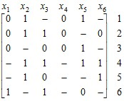
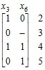
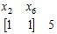
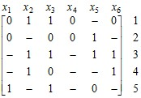
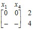
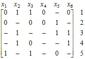

электронный
ресурс по учебной дисциплине
1-40 02 01 «Вычислительные машины, системы и сети»
|
||
| Оглавление | Программа | Теория | Практика | Контроль знаний | Об авторах | ||
Локальные упрощения ДНФ
Дизъюнктивная нормальная форма безызбыточна, если из нее нельзя удалить ни одной элементарной конъюнкции и ни одного литерала из какой-либо конъюнкции. Это равносильно тому, что из представляемой данную ДНФ троичной матрицы нельзя удалить ни одну из строк и ни одно из значений 0 или 1 нельзя заменить на «–». Локальные упрощения ДНФ сводятся к поиску и последовательному удалению таких элементарных конъюнкций и литералов до тех пор, пока данная ДНФ не станет безызбыточной. Простейшие случаи подобного сокращения определяются, например, формулами, полученными в гл. 8:
А х ∨ А = А; А¬х ∨ х = А ∨ х; А х ∨ В¬х ∨ АВ = А х ∨ В¬х.
Более сложный случай представляет ДНФ ¬х1¬х2 х3 ∨ х1¬х2 х4 ∨ х1 х2 х3 ∨ ∨¬х1 х2 х4 ∨ х3 х4, где конъюнкция х3 х4 является избыточной. Действительно, если ее заменить на х3 х4 1 = х3 х4 (х1 х2 ∨ х1¬х2 ∨¬х1 х2 ∨¬х1¬х2), а затем раскрыть скобки, то каждая из конъюнкций ранга 4 окажется поглощаемой некоторой из конъюнкций ранга 3, присутствующей в исходной ДНФ.
Исходя из выше сказанного, отметим два вида избыточности:
D = k ∨ D′ = D′ и D = хk ∨ D′ = k ∨ D′,
где k – элементарная конъюнкция, х – литерал, входящий в элементарную конъюнкцию хk, D – некоторая ДНФ, D′ – ДНФ, получаемая из D удалением конъюнкции k.
17.1. Удаление избыточных элементарных конъюнкций
В первом случае элементарная конъюнкция k избыточна, если k ∨ D′ = D′. Это значит, что k и D′ находятся в отношении формальной импликации, т. е. k ⇒ D′. Функция g имплицирует функцию f, если f имеет значение 1 везде, где имеет значение 1 функция g. В рассматриваемом случае ДНФ D′ обращается в единицу при любом наборе значений переменных, обращающем конъюнкцию k в единицу, независимо от того, какие значения принимают переменные, не входящие в k.
Пусть троичная матрица V представляет ДНФ D′, а троичный вектор v – элементарную конъюнкцию k. Тогда результатом подстановки в D′ значений переменных, обращающих конъюнкцию k в единицу, является минор матрицы V, образованный строками, не ортогональными вектору v и столбцами, соответствующими компонентам вектора v, имеющими значение «–». Если этот минор является вырожденной матрицей, т. е. D′ тождественно равна единице, то конъюнкция k избыточна. В противном случае вектор, ортогональный всем строкам полученного минора, представляет набор значений переменных, обращающий D′ в нуль.
Рассмотрим следующую троичную матрицу и проверим на избыточность ее первую строку:
.
Минор, образованный столбцами х3 и х6, где элементы первой строки имеют значение «–», и строками 2, 3, 4 и 5, не ортогональными первой строке, имеет вид
.
Эта матрица является вырожденной, следовательно, первая строка избыточна. Любой входящий в нее булев вектор принадлежит некоторому интервалу, представляемому какой-либо из строк данной матрицы.
Удалив строку 1, получим матрицу, в которой строка 2 ортогональна всем остальным ее строкам. Это значит, что никакой булев вектор, принадлежащий интервалу, представляемому данной строкой, не принадлежит никакому из других интервалов, представляемых остальными строками. Соответствующий минор является пустой матрицей (с пустым множеством строк). Такая матрица представляет константу 0. Таким образом, строка 2 не является избыточной.
Что касается строки 3, то соответствующий минор является однострочной невырожденной матрицей:
.
Ортогональным вектором для данной строки является (0 –). Подставив 0 во вторую компоненту строки 3, получим вектор, ортогональный всем строкам матрицы. Строка 3 также является неизбыточной для заданной матрицы.
Выполняя подобные построения над остальными строками, убедимся, что они также не являются избыточными.
17.2. Удаление избыточных литералов
Рассмотрим второй вид избыточности в ДНФ, когда D = хk ∨ D′ = k ∨ D′. Здесь избыточным является литерал х. Правую часть этого равенства можно представить следующим образом:
k ∨ D′ = k(х ∨¬х) ∨ D′ = хk ∨ D′ ∨¬хk = D ∨¬хk.
Отсюда видно, что литерал х в выражении хk ∨ D′ является избыточным, если конъюнкция ¬хk является избыточной в выражении D ∨¬хk. Следовательно, задача определения избыточности литерала в ДНФ сводится к предыдущей задаче – задаче определения избыточности элементарной конъюнкции.
Удаление литерала из ДНФ в матричном представлении выражается в замене нуля или единицы в троичной матрице на значение «–». На основании предыдущих рассуждений это можно сделать, если вектор, полученный из строки, содержащей данный нуль или единицу, заменой этого значения на противоположное ему значение (т. е. 0 на 1 или 1 на 0), является избыточным для рассматриваемой матрицы.
Таким образом, для того, чтобы решить вопрос о том, можно ли заменить 0 (или 1) в i-й строке и j-м столбце на значение «–», надо построить минор, образованный столбцами, где i-я строка имеет значения «–», и строками, не ортогональными вектору, полученному из i-й строки заменой нуля (или единицы) в j-м столбце на противоположное значение. Если полученный минор оказался вырожденной матрицей, то такая замена возможна.
Рассмотрим матрицу
.
Чтобы узнать, является ли 0 в строке 1 и столбце х6 избыточным, построим минор, образованный единственным столбцом х5, где строка 1 имеет значение «–», и единственной строкой 3, не ортогональной вектору (0 1 1 0 – 1). Единственный элемент в этом миноре имеет значение 1. Он является невырожденной матрицей. Следовательно, нуль в строке 1 и столбце х6 нельзя заменить на «–».
Рассмотрим теперь единицу в строке 3 и столбце х3. Минор, образованный столбцами х1 и х4 и строками 2 и 4, не ортогональными вектору (– 1 0 – 1 1), имеет вид
.
Вырожденность этого минора говорит о том, данную единицу можно заменить значением «–». Выполнив такую замену, получим матрицу, эквивалентную исходной матрице:
.
| (С) БГУИР |